Ejemplos de diferentes tipos de gráficas de barras verticales generadas con Python.
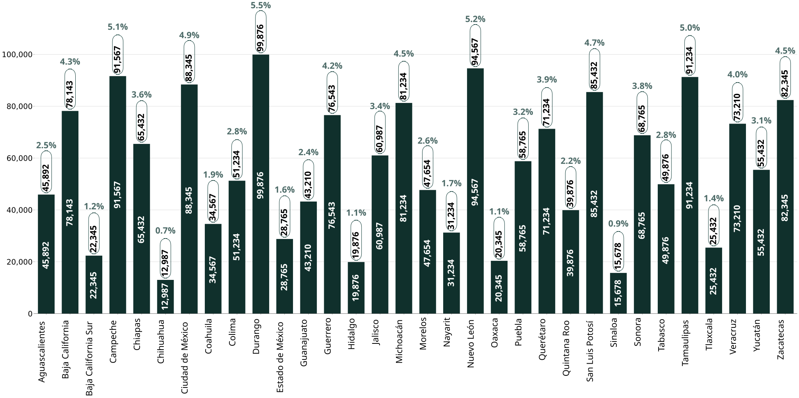
Barras Verticales Básicas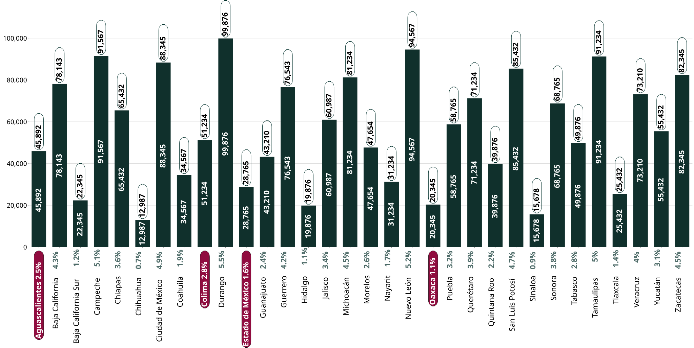
Resaltado de etiquetas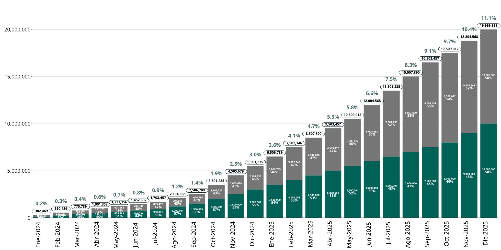
Barras Apiladas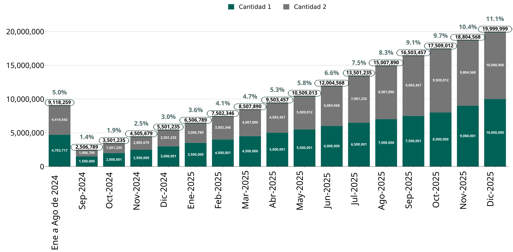
Unión de Barras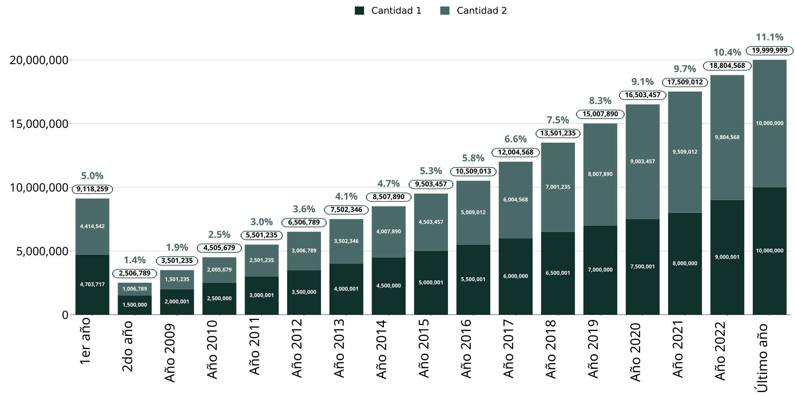
Sustitución de Etiquetas en el eje X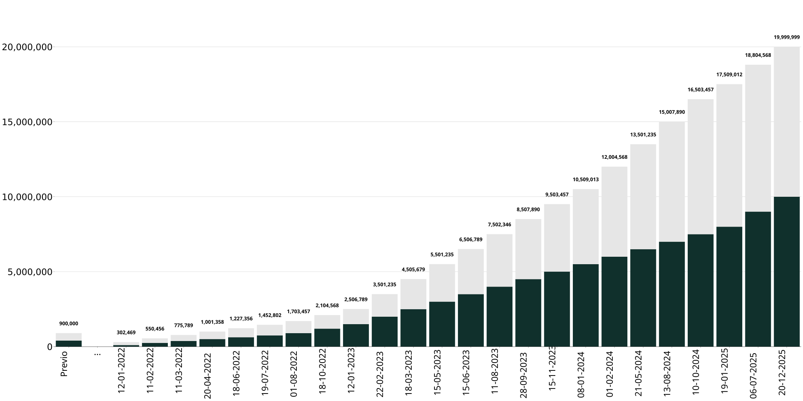
Añadir Barra Extra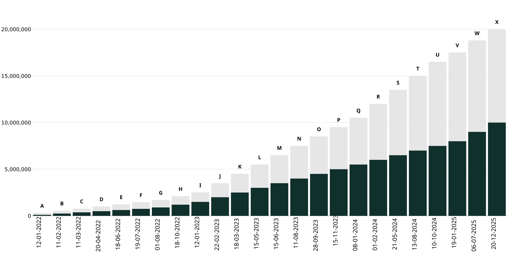
Etiquetas Superiores Personalizadas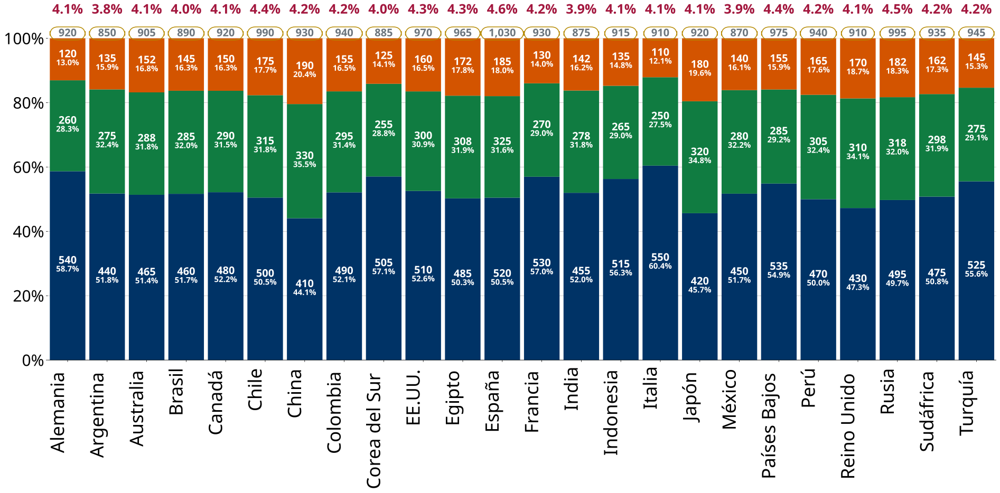
Barras de Porcentaje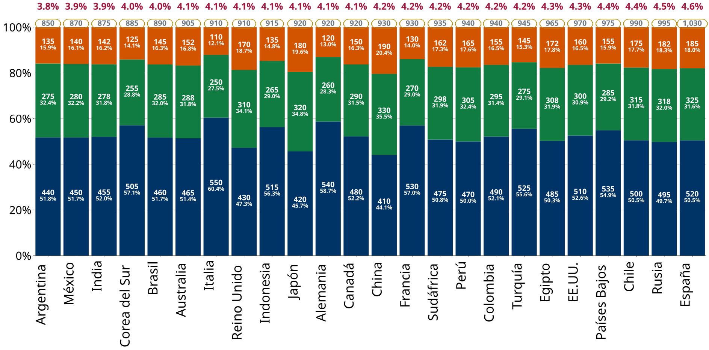
Ordenado por Valor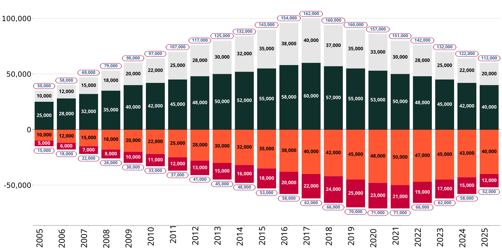
Barras Divergentes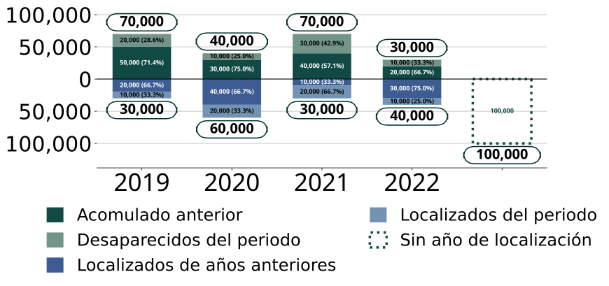
Barras Divergentes con Barra Extra